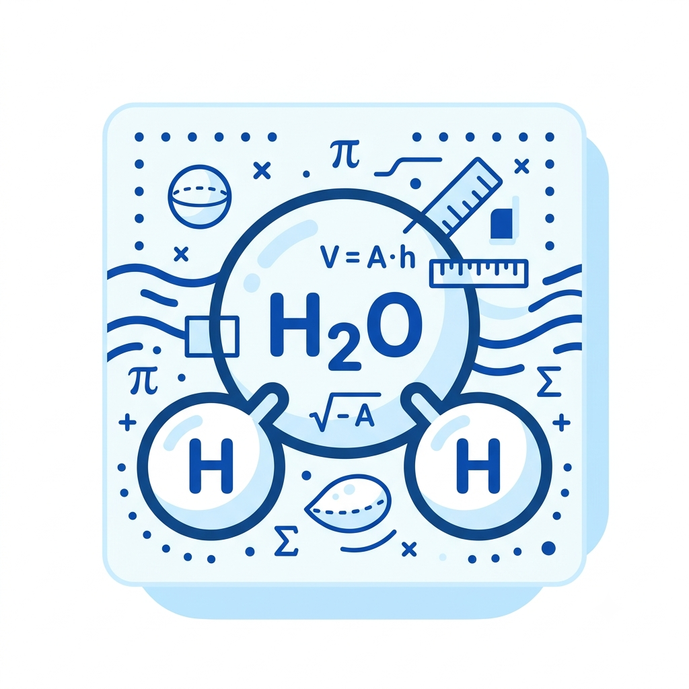

meu primeiro post
Por: Brayan Eduardo
A matemática está presente em praticamente tudo que envolve a água. Ela é usada para medir, calcular, controlar e prever a quantidade de água, seu movimento, sua pressão e seu consumo. Isso é importante tanto no nosso dia a dia quanto na ciência, na agricultura, na engenharia e na preservação do meio ambiente.
💧 Como calcular a quantidade de água?